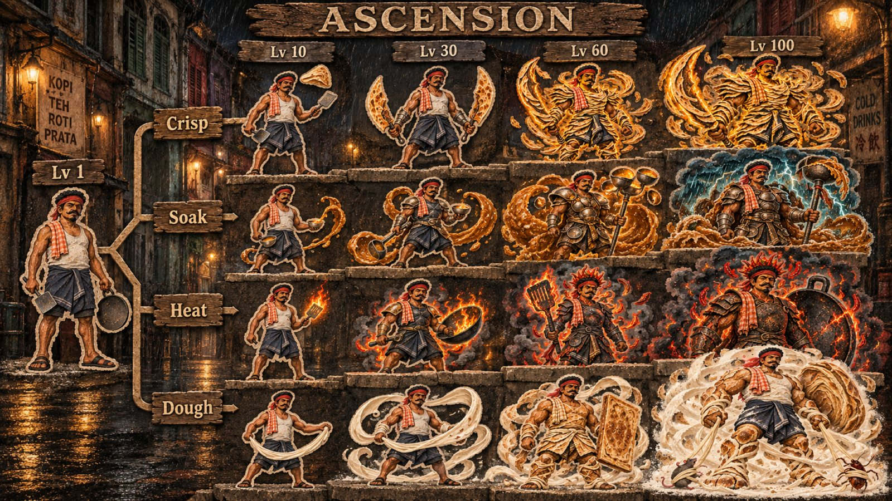

v3 direction. Rough cut card and bark, Singapore nights from the 60s to the 80s, and a climb from a tired hawker at dawn to a legend of the night street. v2 stays as the reference for systems.

Shophouse five-foot-ways under sodium lamps, a void-deck home, an old hawker centre in the monsoon, a pasar malam. Each run ends at dawn back at the real stall.
Eight takes on the hero, same man. Pick the one the game starts with; the others can be skins, flashbacks or story beats.
Five tiers per path. Each one is visibly more powerful: posture, prop scale, armour forged from hawker materials, aura. Level 100 is a run-long transformation earned by filling a meter with combos.
The mythic items as storied, weathered objects. One at a time; each bends a rule.
The same Kannan in six rough cut-out treatments, plus the base material and a night street swatch. Pick one material for the whole game.
Nostalgia props for the streets and the void deck, and a meaner cast of pests and bosses.
Design: docs/plans/v3-concept.md (tone, setting, ascension) on top of v2-concept.md (statuses, combos, sets, builds). Art: Codex batch 5, ~/prata-raja-assets/v3. The v2 concept page is kept as the earlier reference.